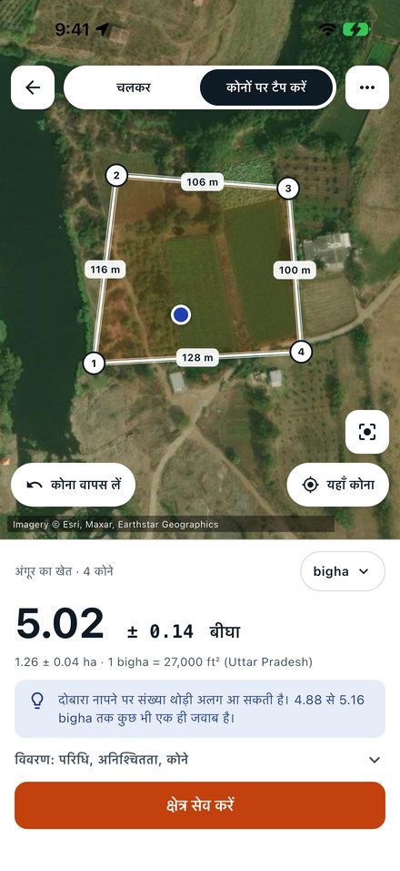

फ़ोन से ज़मीन नापें।
खेत की सीमा पर चलें या नक्शे पर कोने टैप करें। क्षेत्रफल बीघा, गुंठा, एकड़ या हेक्टेयर में, ± के साथ, ताकि पता रहे कि माप कितना सही है।

FixPoint क्या करता है
ज़मीन का क्षेत्रफल
खेत के चारों ओर चलें या कोने टैप करें। क्षेत्रफल, परिधि और भुजाएँ, आपके राज्य की इकाई में।
भरोसेमंद GPS पॉइंट
कई रीडिंग का औसत लेकर हर पॉइंट को बेहतरीन, अच्छा, ठीक या कमज़ोर बताता है, ± मीटर के साथ।
फ़ोटो सबूत
फ़ोटो पर जगह, समय और सटीकता की मुहर।
फिर से ढूँढें
सीमा पत्थर, बोरवेल या गेट तक दूरी और दिशा के साथ वापस पहुँचें।
शेयर और एक्सपोर्ट
Excel, PDF, Google Earth (KMZ), WhatsApp पर शेयर।
निजी
कोई अकाउंट नहीं, कोई विज्ञापन नहीं। आपका डेटा आपके फ़ोन पर।
बीघा, गुंठा, एकड़ बदलें
1 बीघा में कितने वर्ग फुट? यह राज्य पर निर्भर है। बीघा कन्वर्टर इस्तेमाल करें।
फ़ोन से ज़मीन कैसे नापें: पूरा तरीका
सवाल-जवाब
यह कितना सही नापता है?
खुले में फ़ोन का GPS आमतौर पर 2 से 5 मीटर तक सही होता है। FixPoint हर पॉइंट और हर क्षेत्रफल के साथ ± दिखाता है, ताकि पता रहे कि नतीजा कितना सही है।
कौन-कौन सी इकाइयाँ हैं?
हेक्टेयर, एकड़, वर्ग मीटर, वर्ग फुट, और राज्य के हिसाब से बीघा, बिस्वा, कट्ठा, कनाल, मरला, गुंठा, सेंट, अंकनम और ग्राउंड।
क्या यह बिना इंटरनेट के चलता है?
GPS बिना सिग्नल के भी चलता है। नक्शा ऑफ़लाइन देखने के लिए अपने इलाके का नक्शा पहले से सेव कर लें।
क्या यह मुफ़्त है?
हाँ। कोई विज्ञापन नहीं, कोई अकाउंट नहीं, कोई सब्सक्रिप्शन नहीं।
क्या रजिस्ट्री के लिए इसका इस्तेमाल कर सकते हैं?
FixPoint अच्छा अनुमान देता है, उसकी ± सटीकता के साथ। कानूनी रिकॉर्ड के लिए सरकारी सर्वे कराएँ।